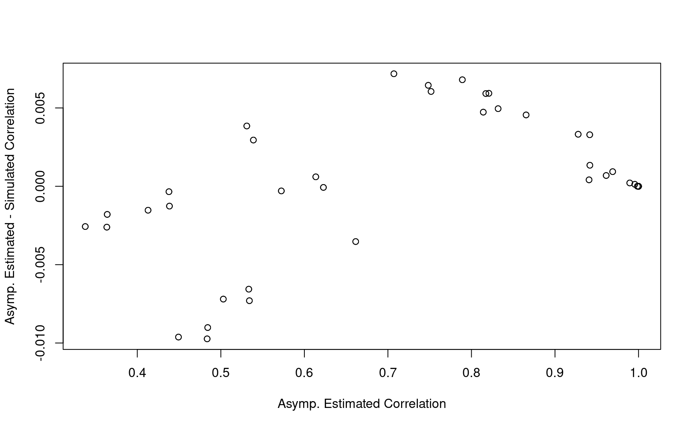
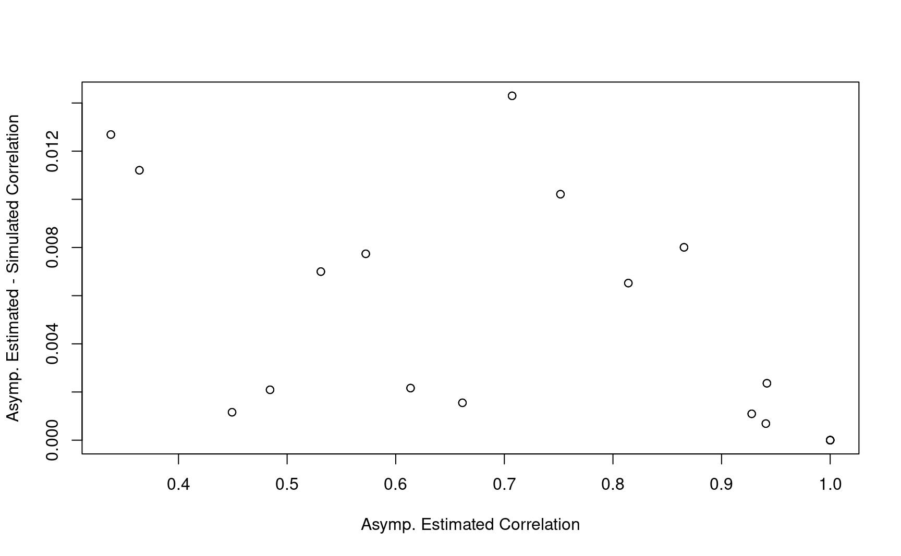

8 MaxCombo test
In this chapter, we discuss group sequential design for MaxCombo test.
8.1 MaxCombo test with interim analysis
\(G_k = \max\{Z_{1k}, Z_{2k}, \ldots \}\)
Test statistics: analysis at \(t_k\) for weight \(w_i(t)\)
\[ Z_{ik}=\sqrt{\frac{n_{0}+n_{1}}{n_{0}n_{1}}}\int_{0}^{t_k}w_i(t)\frac{\overline{Y}_{0}(t)\overline{Y}_{1}(t)}{\overline{Y}_{0}(t)+\overline{Y}_{0}(t)}\left\{ \frac{d\overline{N}_{1}(t)}{\overline{Y}_{1}(t)}-\frac{d\overline{N}_{0}(t)}{\overline{Y}_{0}(t)}\right\} \]
- Not necessary to have the same number of tests in each interim analysis
8.2 Examples
We continue to use the same example scenario from the last chapter.
8.2.1 Example 1
- Using logrank test in all interim analyses and a MaxCombo test \(Z_{1k}: FH(0,0)\), \(Z_{2k}: FH(0,0.5)\), \(Z_{3k}: FH(0.5,0.5)\) in final analysis.
fh_test1 <- rbind(
data.frame(
rho = 0, gamma = 0, tau = -1,
test = 1,
Analysis = 1:3,
analysisTimes = c(12, 24, 36)
),
data.frame(
rho = c(0, 0.5), gamma = 0.5, tau = -1,
test = 2:3,
Analysis = 3, analysisTimes = 36
)
)
fh_test1
#> rho gamma tau test Analysis analysisTimes
#> 1 0.0 0.0 -1 1 1 12
#> 2 0.0 0.0 -1 1 2 24
#> 3 0.0 0.0 -1 1 3 36
#> 4 0.0 0.5 -1 2 3 36
#> 5 0.5 0.5 -1 3 3 368.2.2 Example 2
- Using \(Z_{1k}: FH(0,0)\) and \(Z_{2k}: FH(0,0.5)\).
fh_test2 <- data.frame(
rho = c(0, 0), gamma = c(0, 0.5), tau = -1,
analysisTimes = rep(c(12, 24, 36), each = 2),
Analysis = rep(1:3, each = 2),
test = rep(1:2, 3)
)
fh_test2
#> rho gamma tau analysisTimes Analysis test
#> 1 0 0.0 -1 12 1 1
#> 2 0 0.5 -1 12 1 2
#> 3 0 0.0 -1 24 2 1
#> 4 0 0.5 -1 24 2 2
#> 5 0 0.0 -1 36 3 1
#> 6 0 0.5 -1 36 3 28.3 Sample size calculation
We first consider a user-defined lower and upper bound using gsDesign bound
In general, gsDesign bound cannot be directly used for MaxCombo test:
- Multiple test statistics are considered in interim analysis or final analysis.
We will explain the way to derive bound using spending function in the next chapter.
x$upper$bound
#> [1] 3.710303 2.511407 1.992970x$lower$bound
#> [1] -0.2361874 1.1703638 1.99297028.3.1 Example 1
Sample size can be calculated using gsdmvn::gs_design_combo().
gsdmvn::gs_design_combo(enrollRates,
failRates,
fh_test1,
alpha = 0.025,
beta = 0.2,
ratio = 1,
binding = FALSE,
upar = x$upper$bound,
lpar = x$lower$bound
) %>%
mutate(`Probability_Null (%)` = Probability_Null * 100) %>%
select(-Probability_Null) %>%
mutate_if(is.numeric, round, digits = 2)
#> Analysis Bound Time N Events Z Probability
#> 1 1 Upper 12 444.81 95.54 3.71 0.00
#> 3 2 Upper 24 444.81 219.10 2.51 0.47
#> 5 3 Upper 36 444.81 294.72 1.99 0.80
#> 2 1 Lower 12 444.81 95.54 -0.24 0.14
#> 4 2 Lower 24 444.81 219.10 1.17 0.19
#> 6 3 Lower 36 444.81 294.72 1.99 0.20
#> Probability_Null (%)
#> 1 0.01
#> 3 0.61
#> 5 3.26
#> 2 NA
#> 4 NA
#> 6 NA- Simulation results based on 10,000 replications.
#> n d analysisTimes lower upper
#> 1 445 95.46 12 0.14 0.00
#> 2 445 219.07 24 0.19 0.47
#> 3 445 294.71 36 0.20 0.80- Compared with group sequential design with logrank test (based on AHR).
gsdmvn::gs_design_ahr(
enrollRates = enrollRates, failRates = failRates,
ratio = ratio, alpha = alpha, beta = beta,
upar = x$upper$bound,
lpar = x$lower$bound,
analysisTimes = analysisTimes
)$bounds %>%
mutate_if(is.numeric, round, digits = 2)
#> # A tibble: 6 × 11
#> Analysis Bound Time N Events Z Probability AHR theta
#> <dbl> <chr> <dbl> <dbl> <dbl> <dbl> <dbl> <dbl> <dbl>
#> 1 1 Upper 12 469. 101. 3.71 0 0.84 0.17
#> 2 2 Upper 24 469. 231. 2.51 0.49 0.71 0.34
#> 3 3 Upper 36 469. 311. 1.99 0.8 0.68 0.38
#> 4 1 Lower 12 469. 101. -0.24 0.13 0.84 0.17
#> 5 2 Lower 24 469. 231. 1.17 0.17 0.71 0.34
#> 6 3 Lower 36 469. 311. 1.99 0.2 0.68 0.38
#> # ℹ 2 more variables: info <dbl>, info0 <dbl>8.3.2 Example 2
gs_design_combo(enrollRates,
failRates,
fh_test2,
alpha = 0.025,
beta = 0.2,
ratio = 1,
binding = FALSE,
upar = x$upper$bound,
lpar = x$lower$bound
) %>%
mutate(`Probability_Null (%)` = Probability_Null * 100) %>%
select(-Probability_Null) %>%
mutate_if(is.numeric, round, digits = 2)
#> Analysis Bound Time N Events Z Probability
#> 1 1 Upper 12 348.21 74.79 3.71 0.00
#> 3 2 Upper 24 348.21 171.52 2.51 0.49
#> 5 3 Upper 36 348.21 230.72 1.99 0.80
#> 2 1 Lower 12 348.21 74.79 -0.24 0.10
#> 4 2 Lower 24 348.21 171.52 1.17 0.15
#> 6 3 Lower 36 348.21 230.72 1.99 0.20
#> Probability_Null (%)
#> 1 0.02
#> 3 0.84
#> 5 3.31
#> 2 NA
#> 4 NA
#> 6 NA- Simulation results based on 10,000 replications.
#> n d analysisTimes lower upper
#> 4 349 74.85 12 0.10 0.00
#> 5 349 171.79 24 0.16 0.48
#> 6 349 231.20 36 0.20 0.80- Compared with group sequential design with FH(0, 0.5)
gsdmvn::gs_design_wlr(
enrollRates = enrollRates, failRates = failRates,
weight = function(x, arm0, arm1) {
gsdmvn::wlr_weight_fh(x, arm0, arm1, rho = 0, gamma = 0.5)
},
ratio = ratio, alpha = alpha, beta = beta,
upar = x$upper$bound,
lpar = x$lower$bound,
analysisTimes = analysisTimes
)$bounds %>%
mutate_if(is.numeric, round, digits = 2)
#> # A tibble: 6 × 11
#> Analysis Bound Time N Events Z Probability AHR theta
#> <dbl> <chr> <dbl> <dbl> <dbl> <dbl> <dbl> <dbl> <dbl>
#> 1 1 Upper 12 368. 79.0 3.71 0 0.78 0.63
#> 2 2 Upper 24 368. 181. 2.51 0.5 0.67 0.77
#> 3 3 Upper 36 368. 244. 1.99 0.8 0.64 0.73
#> 4 1 Lower 12 368. 79.0 -0.24 0.1 0.78 0.63
#> 5 2 Lower 24 368. 181. 1.17 0.16 0.67 0.77
#> 6 3 Lower 36 368. 244. 1.99 0.2 0.64 0.73
#> # ℹ 2 more variables: info <dbl>, info0 <dbl>- Compared with group sequential design with FH(0.5, 0.5)
gsdmvn::gs_design_wlr(
enrollRates = enrollRates, failRates = failRates,
weight = function(x, arm0, arm1) {
gsdmvn::wlr_weight_fh(x, arm0, arm1, rho = 0.5, gamma = 0.5)
},
ratio = ratio, alpha = alpha, beta = beta,
upar = x$upper$bound,
lpar = x$lower$bound,
analysisTimes = analysisTimes
)$bounds %>%
mutate_if(is.numeric, round, digits = 2)
#> # A tibble: 6 × 11
#> Analysis Bound Time N Events Z Probability AHR theta
#> <dbl> <chr> <dbl> <dbl> <dbl> <dbl> <dbl> <dbl> <dbl>
#> 1 1 Upper 12 372. 79.8 3.71 0 0.79 0.68
#> 2 2 Upper 24 372. 183. 2.51 0.5 0.68 0.93
#> 3 3 Upper 36 372. 246. 1.99 0.8 0.65 0.97
#> 4 1 Lower 12 372. 79.8 -0.24 0.11 0.79 0.68
#> 5 2 Lower 24 372. 183. 1.17 0.16 0.68 0.93
#> 6 3 Lower 36 372. 246. 1.99 0.2 0.65 0.97
#> # ℹ 2 more variables: info <dbl>, info0 <dbl>8.4 Outline of technical details
We describe the details of calculating the sample size and events required for WLR under fixed design.
It can be skipped for the first read of this training material.
8.4.1 With a pre-defined upper and lower bound
- Derive correlations between test and analysis time point
- Derive effect size
- Power and sample size calculation
8.5 MaxCombo sequential test correlation matrix
- Reference: Section 3.1 of Wang, Luo, and Zheng (2019)
- \(Z_{ij}\): \(i\)-th test in \(j\)-th analysis.

8.6 Between test correlation
- Within each interim analysis, the correlation between tests.
- Recall the discussion in fixed design
\[ \hbox{Cov}(Z_{1k}, Z_{2k}) = \hbox{Var}(Z_k(\frac{\rho_1 + \rho_{2}}{2}, \frac{\gamma_1 + \gamma_2}{2}, \tau)) \]
- Even though one test is used in all interim analysis, correlation of all tests are needed in each interim analysis.
8.6.1 Example 1
corr_test1 <- with(
u_fh_test1,
lapply(analysisTimes, function(tmax) {
cov2cor(gsdmvn:::gs_sigma2_combo(arm0, arm1,
tmax = tmax,
rho = rho, gamma = gamma, tau = tau
))
})
)
names(corr_test1) <- analysisTimes
corr_test1
#> $`12`
#> [,1] [,2] [,3]
#> [1,] 1.0000000 0.9277654 0.9415781
#> [2,] 0.9277654 1.0000000 0.9986153
#> [3,] 0.9415781 0.9986153 1.0000000
#>
#> $`24`
#> [,1] [,2] [,3]
#> [1,] 1.0000000 0.9407774 0.9612878
#> [2,] 0.9407774 1.0000000 0.9955313
#> [3,] 0.9612878 0.9955313 1.0000000
#>
#> $`36`
#> [,1] [,2] [,3]
#> [1,] 1.0000000 0.9417454 0.9690488
#> [2,] 0.9417454 1.0000000 0.9894930
#> [3,] 0.9690488 0.9894930 1.00000008.6.2 Example 2
corr_test2 <- with(
unique(fh_test2[, c("rho", "gamma", "tau")]),
lapply(analysisTimes, function(tmax) {
cov2cor(gsdmvn:::gs_sigma2_combo(arm0, arm1,
tmax = tmax,
rho = rho, gamma = gamma, tau = tau
))
})
)
names(corr_test2) <- analysisTimes
corr_test2
#> $`12`
#> [,1] [,2]
#> [1,] 1.0000000 0.9277654
#> [2,] 0.9277654 1.0000000
#>
#> $`24`
#> [,1] [,2]
#> [1,] 1.0000000 0.9407774
#> [2,] 0.9407774 1.0000000
#>
#> $`36`
#> [,1] [,2]
#> [1,] 1.0000000 0.9417454
#> [2,] 0.9417454 1.00000008.7 Between analysis correlation
- Within each test, the correlation among interim analysis.
- Recall the discussion in group sequential design for weighted logrank test.
8.7.1 Example 1
info1 <- gsdmvn:::gs_info_combo(enrollRates, failRates, ratio,
analysisTimes = analysisTimes,
rho = u_fh_test1$rho,
gamma = u_fh_test1$gamma
)
info1 %>% round(digits = 2)
#> test Analysis Time N Events AHR delta sigma2 theta info
#> 1 1 1 12 500 107.39 0.84 -0.01 0.05 0.17 26.84
#> 2 1 2 24 500 246.28 0.72 -0.04 0.12 0.33 61.35
#> 3 1 3 36 500 331.29 0.68 -0.06 0.16 0.38 81.92
#> 4 2 1 12 500 107.39 0.78 0.00 0.01 0.63 3.60
#> 5 2 2 24 500 246.28 0.67 -0.02 0.03 0.77 15.37
#> 6 2 3 36 500 331.29 0.64 -0.04 0.05 0.73 27.21
#> 7 3 1 12 500 107.39 0.79 0.00 0.01 0.68 2.90
#> 8 3 2 24 500 246.28 0.68 -0.02 0.02 0.93 10.15
#> 9 3 3 36 500 331.29 0.65 -0.03 0.03 0.97 15.07
#> info0
#> 1 26.90
#> 2 62.09
#> 3 83.94
#> 4 3.62
#> 5 15.74
#> 6 28.48
#> 7 2.91
#> 8 10.33
#> 9 15.53info <- info1
info_split <- split(info, info$test)
corr_time1 <- lapply(info_split, function(x) {
corr <- with(x, outer(sqrt(info), sqrt(info), function(x, y) pmin(x, y) / pmax(x, y)))
rownames(corr) <- analysisTimes
colnames(corr) <- analysisTimes
corr
})
corr_time1
#> $`1`
#> 12 24 36
#> 12 1.0000000 0.6614295 0.5724133
#> 24 0.6614295 1.0000000 0.8654185
#> 36 0.5724133 0.8654185 1.0000000
#>
#> $`2`
#> 12 24 36
#> 12 1.0000000 0.4842835 0.3640177
#> 24 0.4842835 1.0000000 0.7516625
#> 36 0.3640177 0.7516625 1.0000000
#>
#> $`3`
#> 12 24 36
#> 12 1.0000000 0.5341938 0.4385035
#> 24 0.5341938 1.0000000 0.8208697
#> 36 0.4385035 0.8208697 1.00000008.7.2 Example 2
info2 <- gsdmvn:::gs_info_combo(enrollRates, failRates, ratio,
analysisTimes = analysisTimes,
rho = u_fh_test2$rho,
gamma = u_fh_test2$gamma
)
info2 %>% round(digits = 2)
#> test Analysis Time N Events AHR delta sigma2 theta info
#> 1 1 1 12 500 107.39 0.84 -0.01 0.05 0.17 26.84
#> 2 1 2 24 500 246.28 0.72 -0.04 0.12 0.33 61.35
#> 3 1 3 36 500 331.29 0.68 -0.06 0.16 0.38 81.92
#> 4 2 1 12 500 107.39 0.78 0.00 0.01 0.63 3.60
#> 5 2 2 24 500 246.28 0.67 -0.02 0.03 0.77 15.37
#> 6 2 3 36 500 331.29 0.64 -0.04 0.05 0.73 27.21
#> info0
#> 1 26.90
#> 2 62.09
#> 3 83.94
#> 4 3.62
#> 5 15.74
#> 6 28.48info <- info2
info_split <- split(info, info$test)
corr_time2 <- lapply(info_split, function(x) {
corr <- with(x, outer(sqrt(info), sqrt(info), function(x, y) pmin(x, y) / pmax(x, y)))
rownames(corr) <- analysisTimes
colnames(corr) <- analysisTimes
corr
})
corr_time2
#> $`1`
#> 12 24 36
#> 12 1.0000000 0.6614295 0.5724133
#> 24 0.6614295 1.0000000 0.8654185
#> 36 0.5724133 0.8654185 1.0000000
#>
#> $`2`
#> 12 24 36
#> 12 1.0000000 0.4842835 0.3640177
#> 24 0.4842835 1.0000000 0.7516625
#> 36 0.3640177 0.7516625 1.00000008.8 Correlation matrix for all tests across analysis
- Reference: Section 3.1 of Wang, Luo, and Zheng (2019)
- \(Z_{ij}\): \(i\)-th test in \(j\)-th analysis.
\[ \hbox{Cor}(Z_{11}, Z_{22}) = \hbox{Cor}(Z_{22}, Z_{11}) \approx \hbox{Cor}(Z_{11}, Z_{21}) \hbox{Cor}(Z_{21}Z_{22}) \]
which implies
\[ \hbox{Cor}(Z_{11}, Z_{22}) = \frac{\hbox{Cov}(Z_{11}, Z_{21})} {\sqrt{\hbox{Var}(Z_{11})\hbox{Var}(Z_{22})}} \]
8.8.1 Example 1
corr_test <- corr_test1
corr_time <- corr_time1
info <- info1
# Overall Correlation
corr_combo <- diag(1, nrow = nrow(info))
for (i in 1:nrow(info)) {
for (j in 1:nrow(info)) {
t1 <- as.numeric(info$Analysis[i])
t2 <- as.numeric(info$Analysis[j])
if (t1 <= t2) {
test1 <- as.numeric(info$test[i])
test2 <- as.numeric(info$test[j])
corr_combo[i, j] <- corr_test[[t1]][test1, test2] * corr_time[[test2]][t1, t2]
corr_combo[j, i] <- corr_combo[i, j]
}
}
}
corr_combo1 <- corr_combo
corr_combo1 %>% round(2)
#> [,1] [,2] [,3] [,4] [,5] [,6] [,7] [,8] [,9]
#> [1,] 1.00 0.66 0.57 0.93 0.45 0.34 0.94 0.50 0.41
#> [2,] 0.66 1.00 0.87 0.61 0.94 0.71 0.62 0.96 0.79
#> [3,] 0.57 0.87 1.00 0.53 0.81 0.94 0.54 0.83 0.97
#> [4,] 0.93 0.61 0.53 1.00 0.48 0.36 1.00 0.53 0.44
#> [5,] 0.45 0.94 0.81 0.48 1.00 0.75 0.48 1.00 0.82
#> [6,] 0.34 0.71 0.94 0.36 0.75 1.00 0.36 0.75 0.99
#> [7,] 0.94 0.62 0.54 1.00 0.48 0.36 1.00 0.53 0.44
#> [8,] 0.50 0.96 0.83 0.53 1.00 0.75 0.53 1.00 0.82
#> [9,] 0.41 0.79 0.97 0.44 0.82 0.99 0.44 0.82 1.00- Compared with simulation results based on 10,000 replications.

8.8.2 Example 2
corr_test <- corr_test2
corr_time <- corr_time2
info <- info2
# Overall Correlation
corr_combo <- diag(1, nrow = nrow(info))
for (i in 1:nrow(info)) {
for (j in 1:nrow(info)) {
t1 <- as.numeric(info$Analysis[i])
t2 <- as.numeric(info$Analysis[j])
if (t1 <= t2) {
test1 <- as.numeric(info$test[i])
test2 <- as.numeric(info$test[j])
corr_combo[i, j] <- corr_test[[t1]][test1, test2] * corr_time[[test2]][t1, t2]
corr_combo[j, i] <- corr_combo[i, j]
}
}
}
corr_combo2 <- corr_combo
corr_combo2 %>% round(2)
#> [,1] [,2] [,3] [,4] [,5] [,6]
#> [1,] 1.00 0.66 0.57 0.93 0.45 0.34
#> [2,] 0.66 1.00 0.87 0.61 0.94 0.71
#> [3,] 0.57 0.87 1.00 0.53 0.81 0.94
#> [4,] 0.93 0.61 0.53 1.00 0.48 0.36
#> [5,] 0.45 0.94 0.81 0.48 1.00 0.75
#> [6,] 0.34 0.71 0.94 0.36 0.75 1.00- Compared with simulation results based on 10,000 replications.

8.9 Power
- First interim analysis
\[ \text{Pr}( G_1 > b_1 \mid H_1) = 1 - \text{Pr}(G_1 < b_1 \mid H_1) \]
- Second interim analysis
\[ \text{Pr}( a_1 < G_1 < b_1, G_2 > b_2 \mid H_1) = \text{Pr}(G_1 < a_1, G_2 < b_2 \mid H_1) \]
\[ - \text{Pr}(G_1 < b_1, G_2 < b_2 \mid H_1) - \text{Pr}(G_1 < a_1, G_2 < \infty \mid H_1) \]
\[ + \text{Pr}(G_1 < b_1, G_2 < \infty \mid H_1) \]
General interim analysis
Denote \(l = (a_1, a_{k-1}, b_k)\) and \(u = (b_1, b_{k-1}, \infty)\)
\(\xi = \{\xi_j; \; j=1,\dots, 2^k\}\): is all \(2^k\) possible combination of the elements in \(l\) and \(u\)
\[ \text{Pr}( \cap_{i=1}^{k-1} a_i < G_i < b_i, G_k > b_k \mid H_1) = \sum_{j=1}^{2^k} (-1)^{\sum_{i=1}^{k} I(\xi_i = l_i)} \text{Pr}(\cap_{i=1}^k G_k < \xi_i) \]
The computation can be simplified if \(a_i = - \infty\) up to \(k\)-th interim analysis.
The computation can be simplified if \(G_i\) contains only one test up to \(k\)-th interim analysis
8.9.1 Example 1
n <- 500
# Restricted to actual analysis
info_fh <- merge(info1, fh_test1, all = TRUE)
corr_fh <- corr_combo1[!is.na(info_fh$gamma), !is.na(info_fh$gamma)]
info_fh <- subset(info_fh, !is.na(gamma))
theta_fh <- abs(info_fh$delta) / sqrt(info_fh$sigma2)
power <- gsdmvn:::gs_prob_combo(
upper_bound = x$upper$bound,
lower_bound = x$lower$bound,
fh_test = fh_test1,
analysis = info_fh$Analysis,
theta = theta_fh * sqrt(n),
corr = corr_fh
)
power
#> Bound Probability
#> 1 Upper 0.002411474
#> 2 Upper 0.525796329
#> 3 Upper 0.828237848
#> 4 Lower 0.129688918
#> 5 Lower 0.162696908
#> 6 Lower 0.1717635068.9.2 Example 2
n <- 500
# Restricted to actual analysis
info_fh <- merge(info2, fh_test2, all = TRUE)
corr_fh <- corr_combo2[!is.na(info_fh$gamma), !is.na(info_fh$gamma)]
info_fh <- subset(info_fh, !is.na(gamma))
theta_fh <- abs(info_fh$delta) / sqrt(info_fh$sigma2)
power <- gsdmvn:::gs_prob_combo(
upper_bound = x$upper$bound,
lower_bound = x$lower$bound,
fh_test = fh_test2,
analysis = info_fh$Analysis,
theta = theta_fh * sqrt(n),
corr = corr_fh
)
power
#> Bound Probability
#> 1 Upper 0.006333066
#> 2 Upper 0.674439644
#> 3 Upper 0.896146115
#> 4 Lower 0.068860093
#> 5 Lower 0.089484513
#> 6 Lower 0.1038601338.10 Sample size
- Root finding based on target power
8.10.1 Example 1
fun <- function(n) {
info_fh <- merge(info1, fh_test1, all = TRUE)
corr_fh <- corr_combo1[!is.na(info_fh$gamma), !is.na(info_fh$gamma)]
info_fh <- subset(info_fh, !is.na(gamma))
theta_fh <- abs(info_fh$delta) / sqrt(info_fh$sigma2)
power <- gsdmvn:::gs_prob_combo(
upper_bound = x$upper$bound,
lower_bound = x$lower$bound,
fh_test = fh_test1,
analysis = info_fh$Analysis,
theta = theta_fh * sqrt(n),
corr = corr_fh
)
1 - beta - max(subset(power, Bound == "Upper")$Probability)
}
uniroot(fun, c(1, 1000), extendInt = "yes")$root
#> [1] 444.81028.10.2 Example 2
fun <- function(n) {
info_fh <- merge(info2, fh_test2, all = TRUE)
corr_fh <- corr_combo2[!is.na(info_fh$gamma), !is.na(info_fh$gamma)]
info_fh <- subset(info_fh, !is.na(gamma))
theta_fh <- abs(info_fh$delta) / sqrt(info_fh$sigma2)
power <- gsdmvn:::gs_prob_combo(
upper_bound = x$upper$bound,
lower_bound = x$lower$bound,
fh_test = fh_test2,
analysis = info_fh$Analysis,
theta = theta_fh * sqrt(n),
corr = corr_fh
)
1 - beta - max(subset(power, Bound == "Upper")$Probability)
}
uniroot(fun, c(1, 1000), extendInt = "yes")$root
#> [1] 348.2162